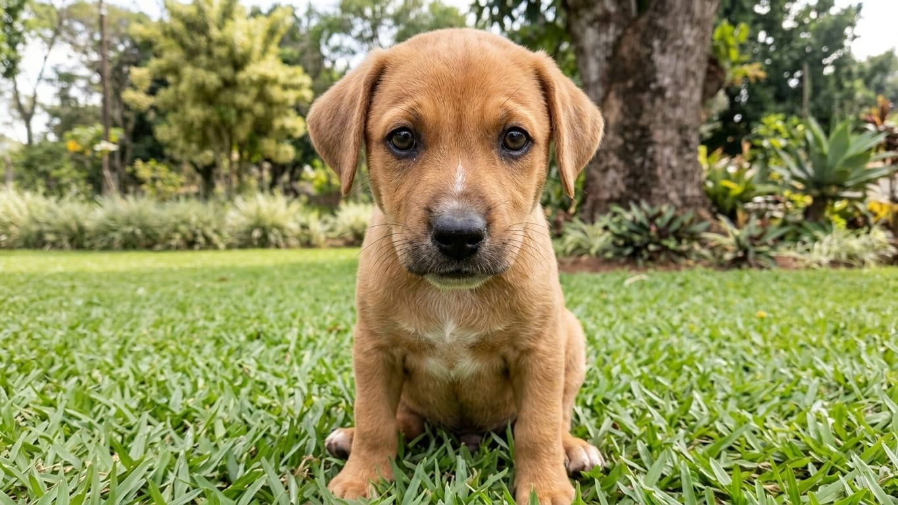
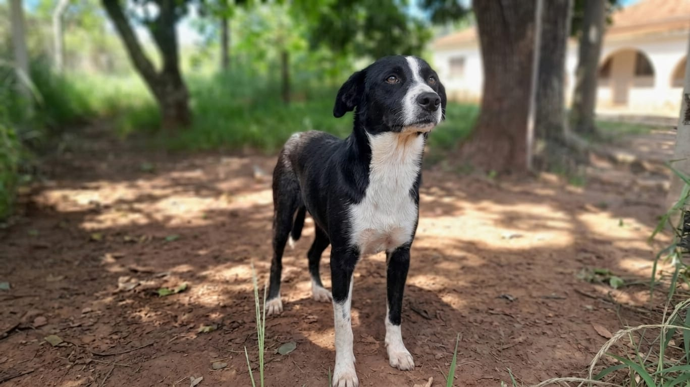
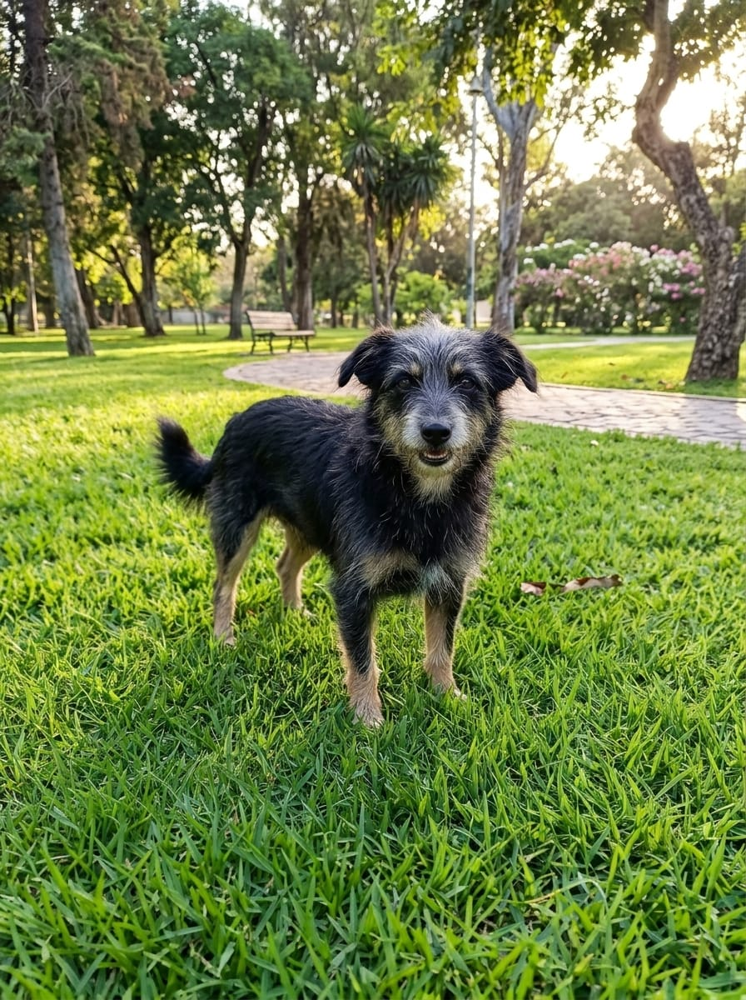
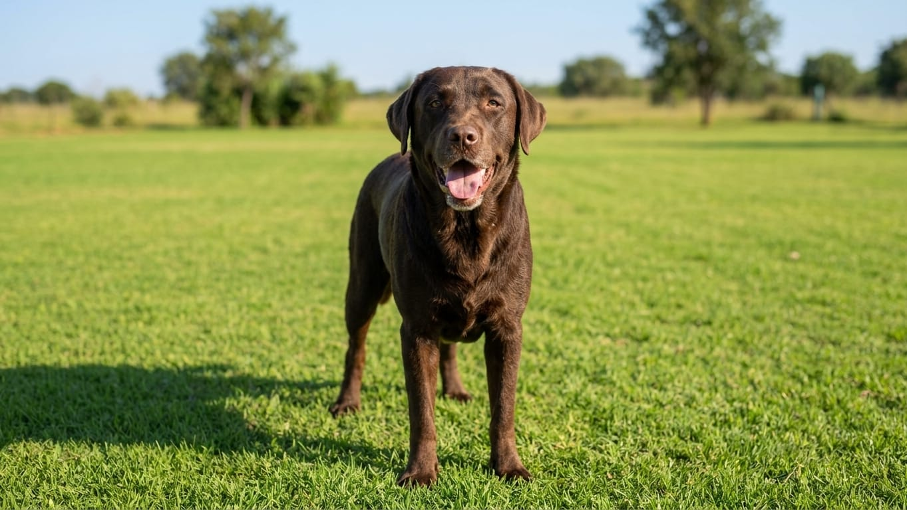
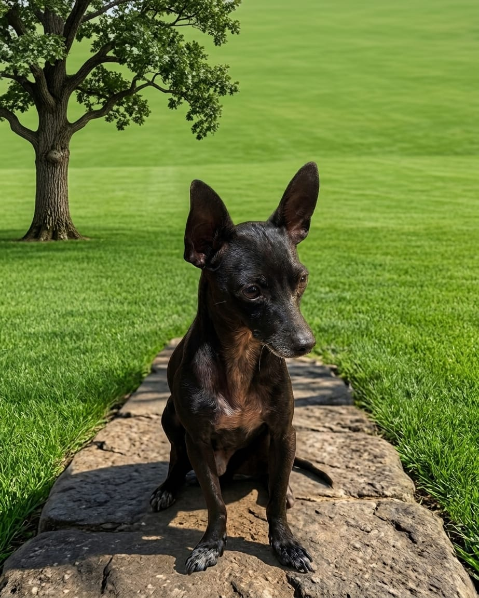

Seu melhor amigo pode estar aqui

Paçoca

Snoopy

Fiapo

Zeus

Black
Como funciona a adoção?
01 - Escolha
Conheça os animais disponíveis para adoção.
02 - Entre em contato
Entre em contato com a Refugio Pet Lins para saber mais.
03 - Adote
Prepare seu lar para receber seu novo aumigo!
Toda vida merece uma chance
Quando demonstramos compaixão pelos animais, transformamos o mundo em um lugar mais justo e acolhedor.